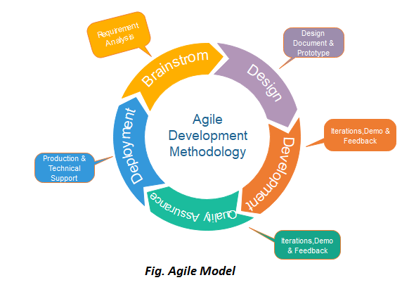

Agile on iteratiivne ja paindlik tarkvaraarenduse protsessimudel, mis keskendub kiiretele ja väikestele arendustsüklitele. Mudel jagab projektid väiksemateks iteratsioonideks, et tagada parem reageerimisvõime muutuvatele nõuetele ja lühendada projekti üldist tähtaega.
Defineeritakse ärivõimalused ja hinnatakse tehnilist ning majanduslikku teostatavust. Nõuete täpne määratlemine aitab projekti algfaasis.
Koos sidusrühmadega luuakse kõrgetasemeline plaan ja määratletakse funktsioonid, mida hakatakse arendama.
Arendajad ja disainerid alustavad tööd. Igas iteratsioonis keskendutakse töötava toote loomisele, mida täiustatakse jooksvalt.
Testimismeeskond hindab toote jõudlust ja otsib vigu. Iga iteratsiooni lõpus tehakse kindlaks, kas toode vastab nõuetele.
Toode juurutatakse kasutuskeskkonda. Seejärel saavad kliendid seda kasutada ja anda tagasisidet.
Kliendi tagasisidet kasutatakse järgmiste iteratsioonide täiustamiseks ja uute funktsioonide lisamiseks.

| Head | Vead |
|---|---|
| Paindlik ja kiire reageerimisvõime | Puudulik dokumentatsioon võib tekitada segadust |
| Iteratsioonid võimaldavad järjepidevat täiustamist | Keeruline suuremate projektide puhul |
| Kliendi tihe kaasatus | Nõuab väga kogenud ja distsiplineeritud meeskonda |